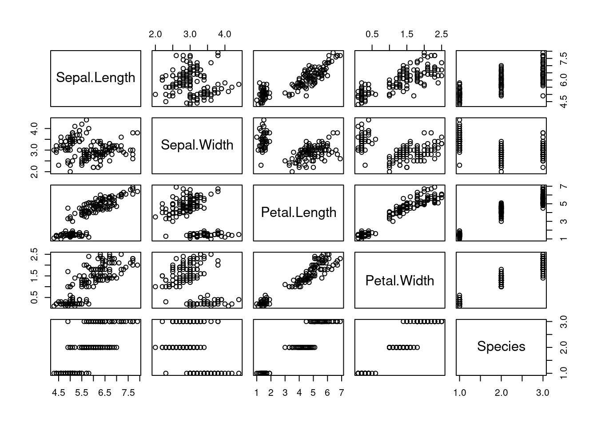
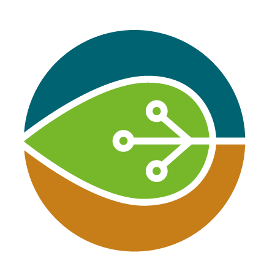

Quantifier la difféerence dans la composition des communautés inventoriée à chaque site et identifier les mécanismes qui expliquent cette différence
Étapes pour envoyer et effecer , si nécessaire, des collections sur les catalogues stac ACER et IO
Discussion point stechniques avec Guillaume Larocque
Littérature sur les différentes méthodes

Manuscrit dispersion des juvéniles Pétrel de Barau
À partir des données brutes
École printemps Calcul Québec - Bases de bash et grappes de calcul
École d’été Dominique Gravel
Première étape de production d’un tableau de bord
Description et définition des objectifs du projet